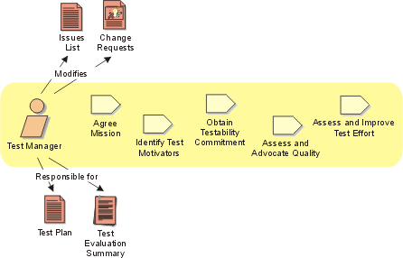

Role:
Test Manager
The Test Manager role is tasked with the overall responsibility for the test
effort's success. The role involves quality and test advocacy, resource planning
and management, and resolution of issues that impede the test effort. This covers:
- Negotiating the ongoing purpose and deliverables of the test effort
- Ensuring the appropriate planning and management of the test resources
- Assessing the progress and effectiveness of the test effort
- Advocating the appropriate level of quality by the resolution of important
Defects
- Advocating an appropriate level of testability focus in the software development
process

Staffing 
Roles organize the responsibility for performing activities and developing
artifacts into logical groups. Each role can be assigned to one or more people,
and each person can fill one or more roles. When staffing the Test Manager role,
you need to consider both the skills required for the role and the different
approaches you can take to assigning staff to the role.
Skills
The appropriate skills and knowledge for the Test Manager role include:
- knowledge of all aspects of the software engineering process
- experience in a wide variety of testing efforts, techniques and tools
- people skills, especially diplomacy and advocacy skills
- planning and management skills
- knowledge of the domain, system or application-under-test (desirable)
- experience programming or managing programming teams (desirable)
Role assignment approaches
The Test Manager role can be assigned in the following ways:
- Assign one staff member to perform the Test Manager role only. This is
a commonly adopted approach and is particularly suitable for large teams
or smaller teams where the Project Manager has minimal test experience.
- Assign one staff member to perform both the Project Manager and Test Manager
roles. This strategy is a good option for smaller test teams.
- Assign one staff member to perform both the Test Manager and Test Designer
roles. This strategy is also a good option for smaller test teams. A person
filling both these roles needs to have strong management and leadership
skills as well as strong technical skills and experience.
- Assign one staff member to perform both the Test Manager and Test Analyst
roles. This strategy is another option for small to mid-sized test teams.
You need to be careful that the minutia of the Test Analyst role does not
adversely effect the responsibilities of the Test Manager role. Mitigate
that risk by assigning less critical Test Analyst tasks to a person filling
both these roles, leaving the most important tasks to team members without
any direct management responsibility.
Further Information
We recommend Rex Black's Managing the Testing Process [BLA99]
as a good source of information about managing testing. We also recommend reading
Kaner, Bach & Pettichord's Lessons Learned in Software Testing [KAN99],
which contains an excellent collection of important concerns for test teams.
Of special interest to the Test Manger role are the chapters on Managing the
testing project and Supervising the testing group.
Copyright
© 1987 - 2001 Rational Software Corporation
|  Roles and Activities >
Roles and Activities >
 Test Manager
Test Manager